Södermalm i tid och rum
Blecktornsgränd
Gränden har sitt namn efter ett hus i hörnet av Brännkyrkagatan, som under 1600- och 1700-talen kallades Gamla blecktornet. Troligen syftade namnet på att tornet var täckt med bleckplåt.
Ur Stockholms gatunam
Blecktornsgränd i Maria församling är känt sedan 1600-talet genom Holms tomtbok 1679 (Bläcktornsgränden). År 1720 omtalas gatan såsom »Lijktorns backen», kanske en skämtsam ombildning som anspelar på att den backiga gatan var brant och obekväm. I en 1600-talskälla klagas det över att gränden är så förfallen »att ingen af grannarna som ofwan före bo, kunna der med något lass upkomma.» På Tillaeus'karta 1733 förekommer det ännu existerande namnet Blecktornsgr[änd].
Anledningen till gatunamnet har varit en byggnad som låg i hörnet av nuvarande Brännkyrkagatan och Blecktornsgränd och som i en odaterad handling från 1636-72 kallas »Bläcktornet». I källorna förekommer omväxlande skrivningarna Blecktornet och Gamla Blecktornet.
|
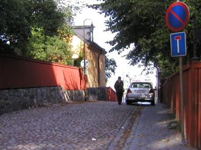  Blecktornsgränd 2
Blecktornsgränd 2 |
Inom dåvarande kvarteret Rosendal, somomfattade bl. a. nuvarande Mariatorget, har det funnits ytterligare en byggnad med namnet Blecktornet. I Mariakyrkoråds protokoll den 15 november 1740 talar man om en »gård neder på Hornsgatan, Blektornet kallad». Det är samma gård som avses, då en källa från den 22 september 1743 uppger, att » Å Södermalm widh Hornsgathan in på gården tänker handelsmannen Herr Hindrich Busch uthi den så kallade Blektornet upföra et sådant huus af Steen». Uttrycket »den så kallade Blektornet» synes här närmast avse en tomt. Detta Blecktorn kallas i källorna omväxlande Nya Blecktornet, Blecktornet och Gamla Blecktornet.
Den som senast yttrat sig om namnet Blecktornet synes vara Björn Hasselblad i boken Stockholmskvarter (1979) s.161. Han skriver: »Namnet Blecktornet är en förvanskning av 'blektornet' och har med blekning av tyger attgöra, vilket i sin tur sammanhänger med den tidigare klädesfabriken i Barnängen. Övervakningen av blekningen skedde från ett speciellt, åttakantigt torn, som finns markerat på Tillaei karta.» Hasselblad anknyterhär till en av allt att döma spridd uppfattning om namnet; se t. ex. Ernst Malmberg Stora Blecktornet (Svenska hem 1930, s. 78). |
| Om Blecktornet vid Blecktornsgränd har veterligen ingen yttrat sig, men självfalletmåste de två originella namnen bedömas på samma sätt. Det ovan anförda materialet talar för att förleden iorden har varit Bleck- eller Bläck-, d. v. s. innehållit kort vokal, vilket utesluter ett samband med verbet bleka. |
|
Tillaeus' form Blectorn bör uppfattas såsom en felskrivning för Blecktorn. Det är ovisst vilken innebörd ordetBleck-/Bläcktorn kan ha haft. Enligt uppgift från SAOB:s redaktion saknas belägg för detta ord i ordbokensexcerptsamlingar, vilket tyder på att några byggnader med benämningen »blektorn» knappast har existerat.Man kan möjligen tänka sig att förleden syftar på tornens taktäckning och motsvarar antingen bleck i bleckplåteller blecka/bläcka, 'del af spånhvarf som täckes af ofvanför liggande hvarf på spåntak' (SAOB). Ur Kulturhus på Söder och Djurgården, Arne Eriksson, 1998 |
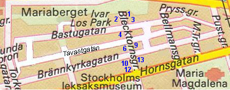 |
|
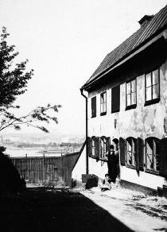 Blecktornsgränd 1. Huset troligen uppfört 1740 Det stod kvar relativt oskadat efter branden i Maria 1759. Utsikt norrut. 1907 |
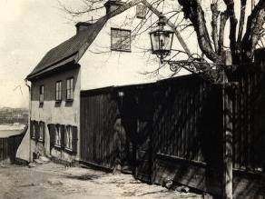 Blecktornsgränd 1. 1923 |
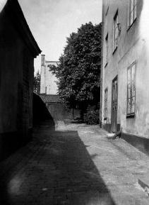 Blecktornsgränd 4, Bastugatan 19. 1925 |
|
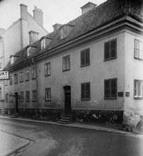 Tavastgatan 13. Blecktornsgränd 9 ner till höger. |
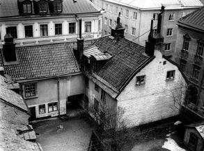 Gården till Blecktornsgränd 6 och Tavastgatan 14. |
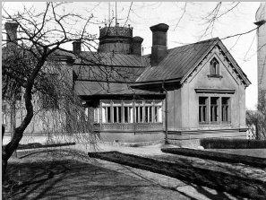 Blecktornsgränd 3 / Bastugatan 20 |
|
Efter Mariabranden uppfördes 1760 ett nytt hus på det tidigare husets grund. Ägare var då bryggaren Jacob Conrad Kahlbrecht.Kofferdikaptenen Daniel Ehrenfriedt Zickerman påbyggde och reparerade huset redan 1774. År 1879 får byggnaden sittnuvarande utseende. Huvudbyggnaden tillbyggdesdå med en vinkelbyggnad med högt sadeltak. I vinkeln mellan huvudbyggnaden och flygeln tillkom en verandabyggnad i trä.Huvudbyggnaden fick i det nordöstra hörnet ett åttkantigt torn med stora rundbågefönster och svängt tak, krönt av engjutjärnsbalustrad. Den som genomförde om- och tillbyggnaderna 1879 var dåvarande ägaren Richard Gustafsson, en på sin tidmycket känd stockholmare. Gustafsson, som var född 1840, försörjde sig på olika sätt innan journalistiken och författandet togöverhand. Han blev rättegångsreferent i Dagens Nyheter men skrev även andra artiklar som publicerades i dagspressen. Såbörjade han ge ut sina sagor som blev utomordentligt populära inte bara i Sverige. De översattes till engelska, tyska och franska.År 1869 startade Gustafsson skämttidningen Kasper. Tidningen slog an, pengarna strömmade till, och efter ett tiotal år kundeGustafsson köpa huset uppe på Mariaberget och ge det en ny gestaltning. Även Kaspers redaktion flyttade till villan. Där sågman ofta tidningens duktige tecknare, den unge Carl Larsson, som kom för att leverera sina alster. |
|
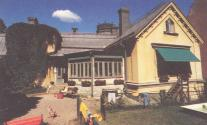  Blecktornsgränd 3 / Bastugatan 20
Blecktornsgränd 3 / Bastugatan 20
|
Rickard Gustafsson hann med mycket under sitt 78-åriga liv. Han skrev revyer och ett hundratal teaterpjäser, gav ut de första tjugofemöresböckerna och tillhörde vid två tillfällen riksdagens andra kammare. Han var stadsfullmäktigeledamot, stiftade Stockholms-Gillet och tog initiativ till återupplivandet av julmarknaderna på Stortorget. Han dog 1918. |
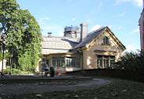 
|
|
En senare hyresgäst i huset var rådmannen Allan Cederborg. Efter honom kallas huset ofta Cederborgska villan. Det var inför hans inflyttning som huset ställdes i ordning - fick centralvärme och övriga bekvämligheter och en särdeles förnämlig vinkällare. Allan Cederborg (1868-1931) var jurist, kommunalman och socialpolitiker. Bland mängden av hans uppdrag märks ordförandeskap i Stockholms stadsfullmäktige 1920-27 och i Statens arbetslöshetskommission från 1923. Från 1918 var han verkställande direktör i Stockholms stads brandförsäkringskontor. Fastigheten, som ägs av Stockholms stad, är sedan 1939 upplåten till föreningen S:ta Maria Magdalena daghem, som har plats för 64 barn. |
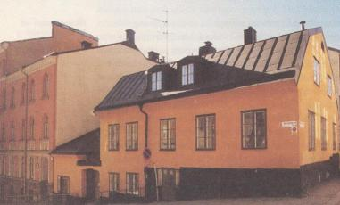  Blecktornsgränd 10. Till vänster mot Mariatorget. Blecktornsgränd 10. Till vänster mot Mariatorget.
|
|
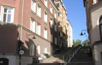  Blecktornsgränd 6 till vänster, 9 till höger. Norrut. Blecktornsgränd 6 till vänster, 9 till höger. Norrut.
|
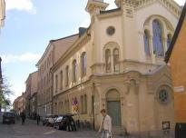  Blecktornsgränd 13. Ebeneserkyrkan Blecktornsgränd 13. Ebeneserkyrkan
|
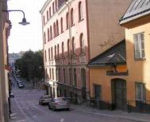  Blecktornsgränd 10 och 12. Söderut. Blecktornsgränd 10 och 12. Söderut.
|